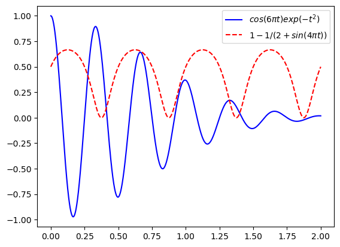
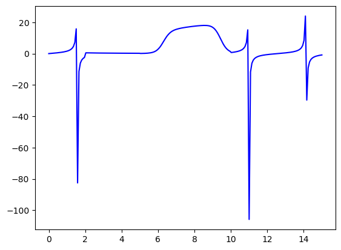
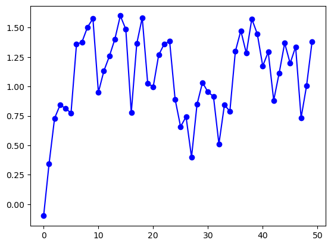
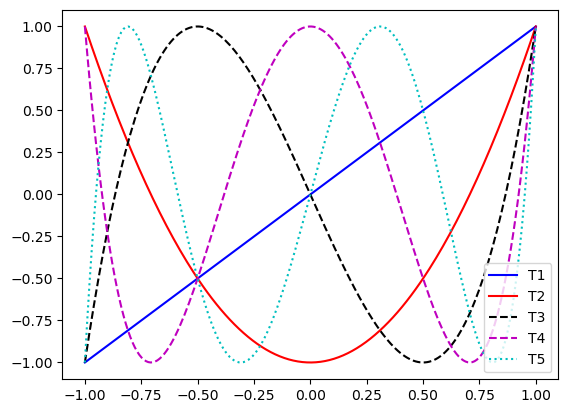
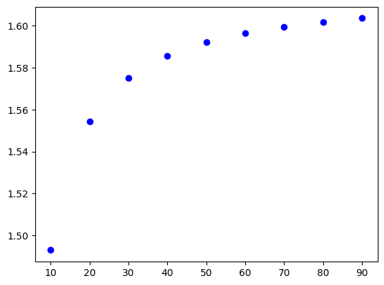
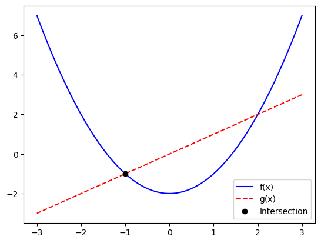

Exercises#
Saleh Rezaeiravesh, saleh.rezaeiravesh@manchester.ac.uk
Department of Mechanical and Aerospace Engineering, The University of Manchester, Manchester, UK
Whether you have completed the previous notebooks or skipped them, it is strongly recommended to work through the following exercises before moving on to the Numerical Methods section. Additionally, attempt to solve each exercise on your own before reviewing the provided solutions.
Only the following Python libraries are required for the exercices.
import math as mt
import cmath as cmt
import numpy as np
import matplotlib.pylab as plt
Exercise#
Loops, Functions
Write a Python function that computes \(n!\) for any non-negative integer input \(n\). Note that,
Solution: By definition, we have
The following algorithm is used to write the Python function:
Inputs: \(n\) (a non-negative integer)
Initialize the value of \(n!\):
fact = 1Loop over the positive integers from 1 to \(n\) (included)
a. multiplyfactby the current integerreturn
fact
Step 2 in the algorithm can be applied through using a while loop (recommended):
def factorial(n):
fact=1
while n > 0:
fact *= n
n -= 1
return fact
In the loop, we start from n and iteratively reduce it by 1 until it reaches 1.
Alternatively, Step 2 in the algorithm can be applied using a for loop:
def factorial2(n):
fact=1
for i in range(1,n+1):
fact *= i
return fact
Here, the loop starts from 1 (not 0), and iteratively increase the multiplier by 1, until it reaches n.
Let’s test these two functions, by calling them for some non-negative integers:
print(factorial(0))
print(factorial2(0))
1
1
print(factorial(6))
print(factorial2(6))
720
720
print(factorial(50))
print(factorial2(50))
30414093201713378043612608166064768844377641568960512000000000000
30414093201713378043612608166064768844377641568960512000000000000
Exercise#
Loops, Functions, Conditional statements
The binomial coefficients count the subset of \(k\) elements from a set of \(n\) elements, and is defined by
where \(k\) and \(n\) are both positive integers and \(k\leq n\).
Write a Python function that computes the binomial coefficient for input values of \(n\) and \(k\).
Hint: You can use your function for computing \(n!\).
Solution:
The following algorithm is used to write the Python function:
Inputs: \(n\) and \(k\) (non-negative integer)
Initialize the value of binomial coefficient:
bc = 1Compute
n!\(\to\)n_fCompute
k!\(\to\)k_fCompute
(n-k)!\(\to\)nk_fEvaluate
bc = n_f/(k_f * nk_f)return
bc
Here is the implementation:
def binomCoeff(n,k):
n_f = factorial(n)
k_f = factorial(k)
nk_f = factorial(n-k)
bc = n_f/(k_f*nk_f)
return bc
We can improve this implementation by checking at the beginning if the input values of \(n\) and \(k\) are of the write type (non-negative integer):
def binomCoeff(n,k):
if k < n and k == int(k) and n == int(n) and n >=0 and k >= 0:
n_f = factorial(n)
k_f = factorial(k)
nk_f = factorial(n-k)
bc = n_f/(k_f*nk_f)
else:
raise ValueError("Wrong k or/and n provided.")
return bc
You can call the function to test it:
print(binomCoeff(6,2))
15.0
print(binomCoeff(7,6))
7.0
The following should return an error:
print(binomCoeff(7.2,6))
---------------------------------------------------------------------------
ValueError Traceback (most recent call last)
Cell In[11], line 1
----> 1 print(binomCoeff(7.2,6))
Cell In[8], line 10, in binomCoeff(n, k)
8 bc = n_f/(k_f*nk_f)
9 else:
---> 10 raise ValueError("Wrong k or/and n provided.")
12 return bc
ValueError: Wrong k or/and n provided.
Exercise#
Loops, numpy, Mathematical functions, Functions
Consider the 1D array (vector) \(\mathbf{x} = [x_1,x_2,\cdots,x_n]\) that has \(n\) elements. Write a Python function that returns the \(l-p\) norm of input \(\mathbf{x}\) defined as,
where \(p\) is in a positive integer and \(p\geq 1\).
Solution: Consider the following algorithm:
Inputs: \(x\) (a 1D array), \(p\): a positive integer
Initialize the norm value (float): \(f = 0.0\)
Loop over the elements of the array: \(x_i\)
a. add \(|x_i|^p\) to \(f\)Compute \(f^{1/p}\)
return \(f\)
Below, we have implemented this algorithm (two variations). Also, we have written a docstring (within “”” “””) that is a good practice for any function we write.
def myNorm(x,p):
"""
Finds l-p norm of 1d array x
Args:
`x`: 1d numpy array
`p`: int
Returns:
`f`: float, ||x||_p
"""
n = len(x)
f = 0.0
for i in range(n):
f += abs(x[i])**p
f = f**(1./p)
return f
Instead of a for loop over the array indices (above), we can directly iterate over the components of the input array:
def myNorm2(x,p):
"""
Finds l-p norm of 1d array x
Args:
`x`: 1d numpy array
`p`: int
Returns:
`f`: float, ||x||_p
"""
f = 0.0
for x_ in x:
f += abs(x_)**p
f = f**(1./p)
return f
You can test thesw two implementations for any 1d numpy array, for instance:
a = [3.6,5.7,-9.87,4.21]
print(myNorm(a,3))
print(myNorm2(a,3))
10.823554739872712
10.823554739872712
b = np.random.rand(10)
print(myNorm(b,2))
print(myNorm2(b,2))
1.8749608199630443
1.8749608199630443
Exercise#
numpy
Create the following matrix in numpy
Create sub-arrays from \(A\) by extracting its
(a) second row,
(b) last column,
(c) top right 2 by 2 elements,
(d) diagonal elements,
(e) lower-triangular part.
Solution:
A = np.array([[1.,4.,-2.],[8.,-1.,-2.],[-2.,6.,2.]])
print(A)
[[ 1. 4. -2.]
[ 8. -1. -2.]
[-2. 6. 2.]]
Extracting 2nd row of \(A\):
A1 = A[1,:]
print(A1)
[ 8. -1. -2.]
Extracting last column of \(A\):
A2 = A[:,-1]
print(A2)
[-2. -2. 2.]
Extracting top-right 2x2 elements of \(A\):
A3 = A[:2,1:]
print(A3)
[[ 4. -2.]
[-1. -2.]]
Extracting diagonal elements of \(A\):
A4 = np.diag(A)
print(A4)
[ 1. -1. 2.]
Lower-angular part of \(A\):
A5 = np.tril(A)
print(A5)
[[ 1. 0. 0.]
[ 8. -1. 0.]
[-2. 6. 2.]]
Exercise#
numpy
Create two random 2D arrays of dimension 3 by 2. Concatenate them to create a 2-by-2 and a 3-by-3 matrix
Solution:
A = np.random.rand(3,2)
B = np.random.rand(3,2)
print(A,A.shape)
print(B,B.shape)
[[0.29540493 0.32018699]
[0.2368252 0.60068101]
[0.85568455 0.19060631]] (3, 2)
[[0.63513505 0.43213228]
[0.5170077 0.71556394]
[0.90044051 0.929163 ]] (3, 2)
Exercise#
numpy, Loops
Write a Python function that extracts the diagonal elements of any square input 2D matrix.
Solution:
In the following implementation, first we check if the input \(A\) is a square matrix. Then loop over the rows or columns of \(A\) and extract its diagonal elements. These will be added to a 1D array d initialized before the loop:
def diagonal(A):
if A.shape[0] == A.shape[1]: #check if A is a square matrix
n = A.shape[0]
d = np.zeros(n)
for i in range(n):
d[i] = A[i,i]
return d
else:
raise ValueError("Input A should be square.")
We can test this function for any square matrix:
A = np.random.rand(3,3)
print(A)
d = diagonal(A)
print('diagonal elements:', d)
[[0.74991456 0.34177509 0.88693855]
[0.40988141 0.21916712 0.19956807]
[0.2863274 0.42904177 0.3463083 ]]
diagonal elements: [0.74991456 0.21916712 0.3463083 ]
Exercise#
numpy, Loops, Conditional statements
Write a Python function that switches the rows and columns of any input 2D matrix.
Solution: Consider the following algorithm and corresponding implementation:
Inputs: A, a 2d numpy array of size \(m\times n\)
Initialize
Bas a \(n\times m\) arrayLoop over the row index of
A\(\to i\)
a. Loop over the column index ofA\(\to j\)
a.i. Assign \(A_{i,j}\) to \(B_{j,i}\)return
B
def trans(A):
m = A.shape[0]
n = A.shape[1]
B = np.zeros((n,m))
for i in range(m):
for j in range(n):
B[j,i] = A[i,j]
return B
Let’s test this:
A = np.random.rand(3,2)
print(A)
[[0.94317095 0.96713886]
[0.99390226 0.12341037]
[0.36244084 0.18629865]]
At = trans(A)
print(At)
print(At.shape)
[[0.94317095 0.99390226 0.36244084]
[0.96713886 0.12341037 0.18629865]]
(2, 3)
Exercise#
numpy, Loops
Define the followig matrix as a numpy array, and then compute the summation of elements along the rows and columns.
Solution:
B = np.array([
[-1., 1.-2.j, 4.0j],
[3.+4.0j, 2., 2.-1.0j]
])
print(B)
[[-1.+0.j 1.-2.j 0.+4.j]
[ 3.+4.j 2.+0.j 2.-1.j]]
In the following cells, we find the summation of elements using both the numpy built-in function sum and a script:
Summation over all elements of \(B\):
s1 = np.sum(B)
print(s1)
(7+5j)
Alternatively, you can write a script using nested for loops:
s1 = 0.0
for i in range(B.shape[0]):
for j in range(B.shape[1]):
s1 += B[i,j]
print(s1)
(7+5j)
Summation of the rows of \(B\):
s2 = np.sum(B, axis=0)
print(s2)
[2.+4.j 3.-2.j 2.+3.j]
Using a script; note that the data type at the initialization should be complex:
s2 = np.zeros(B.shape[1],dtype=complex)
for j in range(B.shape[1]):
for i in range(B.shape[0]):
s2[j] += B[i,j]
print(s2)
[2.+4.j 3.-2.j 2.+3.j]
We can find the summation of the columns of \(B\) using the numpy built-in function and a script:
s3 = np.sum(B, axis=1)
print(s3)
[0.+2.j 7.+3.j]
s3 = np.zeros(B.shape[0],dtype=complex)
for i in range(B.shape[0]):
for j in range(B.shape[1]):
s3[i] += B[i,j]
print(s3)
[0.+2.j 7.+3.j]
Exercise#
numpy, Loops, Conditional statements
Write a Python function that takes in a 1D array and specifies the element with smallest absolute value and also the indices corresponding to it.
Solution:
def maxFinder(x):
#initial guess for the maximum value and its index
xMax = abs(x[0])
iMax = 0
n = len(x) #size of the array
for i in range(1,n):
if abs(x[i]) > xMax:
iMax = i
xMax = abs(x[i])
return iMax,xMax
Let’s test this implementation for random arrays of different sizes. First generate a test array:
n = 100
x = np.random.rand(n)*10. - 5.0 #random values over [-5,5]
print(x)
[-2.14286084e+00 4.23024985e-01 3.59311282e+00 3.47699975e+00
-1.59015486e+00 3.51941471e+00 2.38691905e+00 -1.55240180e+00
3.46146225e+00 3.69965257e+00 2.44484388e+00 -3.44211518e+00
1.81980043e+00 -4.95518637e-01 4.23214957e+00 4.20575303e+00
-1.10850772e+00 1.89910238e+00 3.11756798e+00 4.18047299e+00
-1.82983873e-01 -9.01051664e-01 3.60607861e+00 -3.68835787e+00
-3.07297709e+00 -6.28975556e-01 -6.60536899e-02 2.82851817e+00
1.01499523e+00 3.31996045e+00 -4.56773297e+00 -1.48292854e+00
-2.56838735e+00 -2.18351946e+00 4.44318904e+00 3.79037039e+00
4.42304626e+00 4.37386668e+00 -3.17350028e-01 1.23186857e+00
-3.89061506e-01 4.57050126e+00 2.21185270e+00 -2.63293283e+00
-3.50297525e-01 -2.10714964e+00 -4.94741307e-02 3.00390737e+00
1.78096506e+00 4.66726122e+00 3.75391343e+00 -2.39683674e+00
-4.59276099e+00 -1.40688357e+00 -1.96006520e+00 -2.34462082e+00
5.22401567e-01 -1.35583458e-02 -2.27494827e+00 2.25442900e+00
-1.15108837e-01 7.64713691e-01 2.35159008e+00 -3.11751969e+00
-3.69472096e+00 -5.64885058e-04 3.39761965e+00 4.16590650e+00
2.36495692e+00 -3.68377349e+00 4.75179168e+00 -8.98697476e-01
4.35011159e+00 -2.20206605e+00 2.19680906e+00 1.62545464e+00
-2.37693241e+00 -2.57801453e+00 1.21627473e+00 -4.51015072e+00
1.40659330e+00 4.99841412e+00 3.04894773e+00 -8.72172634e-01
-3.28679776e+00 4.64938385e+00 -4.65581247e+00 4.43430667e+00
1.48987867e+00 -2.07700001e+00 3.90919364e+00 4.63251763e-01
3.44069379e+00 -4.93982032e+00 -1.78483776e+00 -1.23987227e+00
1.05798361e+00 -4.24368890e+00 -2.27163745e+00 2.92254637e+00]
Call the function for the generated array:
iMax , xMax = maxFinder(x)
print(iMax,xMax)
81 4.998414120105309
Exercise#
numpy, Loops, Conditional statements
Redo the previous exercise but for 2D input arrays.
Solution: We just need to extend the above function considering nested loops for going through the rows and columns of the 2D input arrays.
def maxFinder2D(A):
#initial guess for the maximum value and its index
aMax = abs(A[0][0])
iMax = 0
jMax = 0
m = A.shape[0] #number of A's rows
n = A.shape[1] #number of A's columns
for i in range(0,m):
for j in range(0,n):
if abs(A[i][j]) > aMax:
iMax = i
jMax = j
aMax = abs(A[i][j])
return iMax,jMax,aMax
Let’s test this for a random 2D array:
m, n = 100, 80 #number of rows and columns
#1D array of size m*n
A = np.random.rand(m*n)*10. - 5.0 #random values over [-5,5]
#reshape the array to a 2D array of size mxn
A = A.reshape((m,n))
print(A.shape)
(100, 80)
Now, call the function:
iMax, jMax, aMax = maxFinder2D(A)
print(iMax, jMax, aMax)
28 59 4.999780299249068
Exercise#
numpy, Mathematical functions, Plotting
Create a column time vector \(t\) of values from 0 to 2 every 0.001.
Create a matrix \(X\) comprising two columns: the first being \(f_1(t) = cos(6\pi t)exp(-t^2)\) and the second being \(f_2(t) = 1-1/(2+sin(4\pi t))\). Plot out the two curves.
Solution:
We are going to create an array t of evenly-spaced values over \([0,2]\) with the step size \(0.001\). The size of the array would be:
We can create the array t using numpy.linspace function:
t = np.linspace(0,2,2000)
n = len(t) #2000
The array \(X\) is 2D with size \(n\times 2\), where its first and second column contains the values of \(f_1(t)\) and \(f_2(t)\), respectively.
X = np.zeros((n,2)) #Initialize X
#Assign values to X's first and second columns:
X[:,0] = np.cos(6.*np.pi*t)*np.exp(-t**2.)
X[:,1] = 1.-1./(2.+np.sin(4.*np.pi*t))
We plot the columns of \(X\) in terms of \(t\):
plt.plot(t,X[:,0],'-b',label='$cos(6\pi t)exp(-t^2)$')
plt.plot(t,X[:,1],'--r',label='$1-1/(2+sin(4\pi t))$')
plt.legend(loc='best')
plt.show()

Exercise#
numpy, Mathematical functions, Conditional statement, Functions
Write a Python function that returns the value of \(f(x)\) for input \(x \in[0,15]\), where
Test your function
Solution: We need an if statement to define the function over its different subranges. An easy way is to consider single values of \(x\) in the conditional statement. Hence, we should use the mathematical functions from math.
def myF(x):
if 2 <= x < 5:
f = 1./x
elif 5 <= x <= 10:
f = 20.*mt.sqrt(mt.log(x/10.)+1.)/(1.+mt.exp(-5.*mt.sin(x)))
else:
f = mt.tan(x)
return f
We can call this function for scalar values of \(x\):
print(myF(2.5))
print(myF(0.6))
0.4
0.6841368083416923
If we have an array of \(x\) values, we call the above function for each member of that. The returned values are collected in a separate array initilized before the loop:
x = np.linspace(0,15,200) # values of x
F = np.zeros(len(x)) #initialize an array to collect the values of x
for i in range(len(x)):
F[i] = myF(x[i]) #call the function for each member of the x array
We can plot \(f(x)\) versus \(x\):
plt.plot(x,F,'-b')
plt.show()

Exercise#
numpy, Loops, Functions
Consider a discrete function where its value at each iteration, \(x_i\), depends on its value in the previous iteration \(x_{i-1}\) through
where \(\epsilon_i\) is a random value from a uniform distribution over \([0,1]\).
Write a Python function that generates \(n\) successive values of \(x\) for a given initial condition \(x_0\).
Solution:
def xVals(n,x0):
#initialize an array of size n
x = np.zeros(n)
#set the initial value in the 1st element of the array
x[0] = x0
#generate an array of uniform random numbers
eps = np.random.rand(n)
#update the values of x, starting from x[1]
for i in range(1,n):
x[i] = 0.5*x[i-1]+eps[i]
return x
Now, let’s test the function.
x1 = xVals(50,-0.1)
print(x1)
[-0.1 0.34536757 0.729716 0.84249157 0.81510394 0.77401584
1.35846739 1.37812512 1.50334064 1.57748077 0.95066616 1.13240079
1.25712177 1.40183712 1.60129782 1.48720824 0.7766923 1.36387904
1.58483361 1.02791367 0.99622263 1.2670233 1.36051341 1.38477265
0.89220438 0.65872496 0.74277722 0.39895071 0.84769179 1.03365471
0.95333465 0.91577203 0.51178436 0.84287068 0.79027753 1.29866399
1.47413049 1.28248355 1.574493 1.44788916 1.17460329 1.29318356
0.88214474 1.11483111 1.36897482 1.19690293 1.33762665 0.7339006
1.0070589 1.38101291]
We can plot the array \(x\). For this, we need to create an array of size n of indices to be represented on the horizontal axis:
I = np.arange(len(x1))
plt.plot(I,x1,'-ob')
plt.show()

Exercise#
Mathematical functions, Functions
Consider the quadratic equation \(ax^2+bx+c=0\) with \(a, b, c\) being real numbers and \(a\neq0\). From calculus, we know that the two roots of this equations can be obtained from,
Write a Python function that takes in real numbers \(a\neq0\), \(b\), and \(c\) and returns roots \(x_1\) and \(x_2\).
Solution:
In the following implementation, we first check if \(a\neq 0\) is met. If so, the rest is straightforward. Only be careful that the square root function sqrt should be called from cmath and not math, as it is plausible that the result of this function is a complex number.
def rootPoly2(a,b,c):
if a == 0.:
raise ValueError("a cannot be zero.")
else:
d = b**2. - 4.*a*c
x1 = (-b + cmt.sqrt(d))/(2.*a)
x2 = (-b - cmt.sqrt(d))/(2.*a)
return x1,x2
Here are some tests:
x1, x2 = rootPoly2(2.,1.,-5.)
print("roots:",x1,x2)
roots: (1.3507810593582121+0j) (-1.8507810593582121+0j)
x1, x2 = rootPoly2(3.,4.5,7.)
print("roots:",x1,x2)
roots: (-0.75+1.3307266185559425j) (-0.75-1.3307266185559425j)
x1, x2 = rootPoly2(1.,-1,-2.)
print("roots:",x1,x2)
roots: (2+0j) (-1+0j)
Exercise#
numpy arrays, Mathematical functions, Plotting
Chebyshev polynomials of order \(k\) over real values of \(x \in [-1,1]\) are defined as,
Write a Python function that returns the value of \(T_k(x)\) for input \(k\) and \(x\). Your function should work for both single values and multiple values (arrays) of \(x\). Additionally, plot the Chebyshev polynomials for \(k=1,2,..,5\) for 200 evenly-spaced values of \(x\) over \([-1,1]\).
Solution:
In the following imeplementation, we first check that the input \(k\) is a non-negative integer number. Assuming the input \(x\) can be a numpy array, then the numpy mathematical functions are used.
def chebyshevPoly(k,x):
if k == int(k) and k >= 0:
T = np.cos(k * np.arccos(x))
else:
raise ValueError("k should be a non-negative integer")
return T
This function can be called for single values of \(x\) over \([-1,1]\):
print(chebyshevPoly(2,-0.58))
print(chebyshevPoly(5,0.58))
-0.3272000000000005
0.0479308287999998
The function can also be used for numpy arrays of \(x\):
x = np.linspace(-1.,1.,200)
T1 = chebyshevPoly(1,x)
T2 = chebyshevPoly(2,x)
T3 = chebyshevPoly(3,x)
T4 = chebyshevPoly(4,x)
T5 = chebyshevPoly(5,x)
These can be plotted in a single plot with appropriate labling:
plt.plot(x,T1,'-b',label='T1')
plt.plot(x,T2,'-r',label='T2')
plt.plot(x,T3,'--k',label='T3')
plt.plot(x,T4,'--m',label='T4')
plt.plot(x,T5,':c',label='T5')
plt.legend(loc='best')
plt.show()

Exercise#
numpy, Mathematical functions, Functions, Loops
Write Python functions that returns the sum over a finite number of values of a given sequence. The inputs to the function is:
n: integer, number of values in the sequence.
Implement your functions for the following sequences:
\(x_n=exp(-n^2)\)
\(x_n = (1+\frac{1}{n})^n\)
def ex1_a(n):
s=0.
for i in range(n):
s += mt.exp(-i**2.)
return s
An alternative implementation using numpy:
def ex1_b(n):
nAr = np.arange(n)
s = np.sum(np.exp(-nAr**2.))
return s
We can verify these two implementations return the same values:
print(ex1_a(10))
print(ex1_b(10))
1.3863186024133263
1.386318602413326
You can modify the above scripts for \(x_n = (1+\frac{1}{n})^n\).
Exercise#
numpy, Plotting
Using
numpybuilt-in functions, create an array of positive integer values of \(n\) over \([10,100]\).Evaluate \(F_n\) defined below at the resulting array of \(n\).
Plot values of \(F_n\) versus \(n\).
Solution:
An efficient way of creating an array of positive \(n\) over the given range is to use numpy.arange:
n = np.arange(10,100,10)
print(n)
[10 20 30 40 50 60 70 80 90]
Evaluate the given function for this array:
t1 = (1. + mt.sqrt(5))/2.
t2 = (1. - mt.sqrt(5))/2.
Fn = ((t1**n - t2**n)/mt.sqrt(5))**(1/n)
Make a plot (only discrete values are shown by markers):
print(Fn)
plt.plot(n,Fn,'ob')
[1.49291908 1.55422321 1.57520884 1.58580767 1.59220118 1.59647782
1.5995396 1.60183979 1.60363111]
[<matplotlib.lines.Line2D at 0x7f6d25676e90>]

Exercise#
numpy, Conditional statements, Loops, Plotting
Consider the following two functions:
From analytical solution, we know that the intersection of these two function is at \(x=-1.0\) and \(x=2.0\).
Write a Python script that searches values of \(x\) over \([-3.0,3.0]\) to (approximately) find these two roots. You can try different tolerances for getting close to the exact values of the intersection points.
Solution: Consider the following algorithm
Inputs: \(n\) and tolerance \(\epsilon\)
Create a set of \(n\) evenly-spaced values of \(x\in[-3.0,3.0]\) \(\to\)
xEvaluate \(f(x)\) and \(g(x)\) at
x\(\to\)f,gCreate an empty list
rLoop over values of
fandg\(\to\)f[i]andg[i]
a. Is \(|f_i - g_i|\leq \epsilon\)
a.i. If yes, appendx[i]tor
Set the inputs:
eps = 1.e-3 #tolerance epsilon
n= 1000 #data resolution (= arrays' size)
Create array \(x\):
x = np.linspace(-3.,3.,n)
Evaluate \(f(x)\) and \(g(x)\) at the generated \(x\) array:
f = x**2 - 2.
g = x
Find the intersections:
r = []
for i in range(len(x)):
if abs(f[i] - g[i]) < eps:
r.append(x[i])
print(r)
[-1.0]
Plotting
r = np.asarray(r)
plt.plot(x,f,'-b',label='f(x)')
plt.plot(x,g,'--r',label='g(x)')
plt.plot(r,r,'ok',label='Intersection')
plt.legend(loc='best')
plt.show()

Depending on the resolution of \(x\) (value of n) and chosen tolerance eps, you may find various approximations for the intersection points.
Exercise#
numpy, Functions, Loops
A polynomial of order \(n\) is defined as,
The vector of coefficients of this polynomial is \(\mathbf{a}=[a_0,a_1,a_2,\cdots,a_n]\).
Write a Python function with \(x\) and \(\mathbf{a}\) as the inputs, that returns the value of \(P_n(x)\). Test your implementations for the following polynomials:
where
\(x\) is a real number.
\(x\) is an array of real numbers over [-1,2].
Solution:
Since the function should work for both scalar and arrays of \(x\), the best solution is to consider P to be a numpy array of the same size of \(x\). This means, all the input \(x\) should be 1D numpy arrays, even the scalar ones. The latter should be considered as arrays of size 1.
def myPolyFun(a,x):
n = len(a)
P = np.zeros(len(x))
for i in range(n):
P += a[i]*x**i
return P
Let’s evaluate the function for the given \(P_4(x)\) and \(P_5(x)\) at a scalar \(x\) that is defined as an array:
x1 = np.array([1.5])
P4 = myPolyFun(a=[1.0,0.0,0.5,3.0,-6.7], x=x1)
P5 = myPolyFun(a=[13.6,-2.5,2.0,-8.45,0.0,-6.7], x=x1)
print('P4 =', P4)
print('P5 =', P5)
P4 = [-21.66875]
P5 = [-65.046875]
For multiple values of \(x\in[-1.,2.]\), we have
x2 = np.linspace(-1.,2.,100)
P4 = myPolyFun(a=[1.0,0.0,0.5,3.0,-6.7], x=x2)
P5 = myPolyFun(a=[13.6,-2.5,2.0,-8.45,0.0,-6.7], x=x2)
print('P4 =', P4)
print('P5 =', P5)
P4 = [-8.20000000e+00 -7.18935089e+00 -6.26324536e+00 -5.41691141e+00
-4.64571266e+00 -3.94514829e+00 -3.31085308e+00 -2.73859743e+00
-2.22428728e+00 -1.76396421e+00 -1.35380535e+00 -9.90123457e-01
-6.69366847e-01 -3.88119445e-01 -1.43100763e-01 6.88340960e-02
2.50694439e-01 4.05353982e-01 5.35550850e-01 6.43887578e-01
7.32831108e-01 8.04712793e-01 8.61728395e-01 9.05938085e-01
9.39266444e-01 9.63502459e-01 9.80299531e-01 9.91175466e-01
9.97512482e-01 1.00055720e+00 1.00142067e+00 1.00107832e+00
1.00037001e+00 1.00000000e+00 1.00053697e+00 1.00241399e+00
1.00592856e+00 1.01124257e+00 1.01838234e+00 1.02723858e+00
1.03756641e+00 1.04898539e+00 1.06097944e+00 1.07289693e+00
1.08395062e+00 1.09321768e+00 1.09963969e+00 1.10202265e+00
1.09903695e+00 1.08921741e+00 1.07096324e+00 1.04253808e+00
1.00206995e+00 9.47551312e-01 8.76839014e-01 7.87654321e-01
6.77582908e-01 5.44074858e-01 3.84444664e-01 1.95871226e-01
-2.46021447e-02 -2.80067728e-01 -5.73753395e-01 -9.09022608e-01
-1.28937442e+00 -1.71844347e+00 -2.20000000e+00 -2.73794983e+00
-3.33633438e+00 -3.99933065e+00 -4.73125124e+00 -5.53654434e+00
-6.41979373e+00 -7.38571878e+00 -8.43917445e+00 -9.58515129e+00
-1.08287754e+01 -1.21753086e+01 -1.36301482e+01 -1.51988271e+01
-1.68870137e+01 -1.87005123e+01 -2.06452624e+01 -2.27273393e+01
-2.49529540e+01 -2.73284529e+01 -2.98603180e+01 -3.25551670e+01
-3.54197531e+01 -3.84609651e+01 -4.16858275e+01 -4.51015002e+01
-4.87152788e+01 -5.25345946e+01 -5.65670143e+01 -6.08202403e+01
-6.53021105e+01 -7.00205985e+01 -7.49838134e+01 -8.02000000e+01]
P5 = [ 33.25 31.35426466 29.61960084 28.03440277 26.5877015
25.26914443 24.06897473 22.97801082 21.98762578 21.08972686
20.27673489 19.54156379 18.87759995 18.27868178 17.73907906
17.2534725 16.81693312 16.42490175 16.07316844 15.75785197
15.47537929 15.22246493 14.99609053 14.79348425 14.6121002
14.44959799 14.30382208 14.17278129 14.05462828 13.94763893
13.85019186 13.76074789 13.67782943 13.6 13.52584367
13.45394449 13.38286599 13.31113059 13.23719909 13.15945011
13.07615956 12.98548006 12.88542046 12.77382521 12.64835391
12.50646069 12.3453737 12.16207457 11.95327784 11.71541047
11.44459121 11.13661014 10.78690808 10.39055606 9.94223476
9.43621399 8.86633214 8.22597562 7.50805833 6.70500112
5.80871122 4.81056172 3.70137105 2.47138236 1.11024305
-0.39301581 -2.05 -3.87297274 -5.87487518 -8.06934698
-10.47074683 -13.09417303 -15.95548398 -19.07131877 -22.45911772
-26.13714289 -30.12449866 -34.44115226 -39.10795431 -44.14665937
-49.57994649 -55.43143973 -61.72572874 -68.48838927 -75.74600375
-83.52618179 -91.85758075 -100.7699263 -110.29403292 -120.4618245
-131.30635482 -142.86182815 -155.16361977 -168.2482965 -182.15363728
-196.91865369 -212.58361047 -229.19004614 -246.78079345 -265.4 ]
Exercise#
numpy, Functions, Loops
A geometric series is defined as,
where \(a\) is the initial value and \(r\) is the common ratio. If \(|r|<1\) when \(n\to \infty\), the summation \(S_n\) converges to \(S=a/(1-r)\). For any finite value of \(n\), the error between the summation \(S_n\) and the 1exact value \(S\) can be measured by \(error=|S_n-S|/|S|\).
Write a Python script that for given values of \(a\) and \(r\) computes \(S_n\). The code should stop once the \(error\) is less than a given threshold \(\epsilon\), i.e. when \(error <\epsilon\). Your code should print the computed value of \(S_n\) and the number of terms required in the summation to reach the preset error limit.
Solution: We can consider the following algorithm:
Inputs: real numbers \(a\), \(r\) (\(|r|<1\)), and \(\epsilon\)
Initialize the value of \(S_n \to 0\) and error \(e \to 1.0\) (arbitrarily larger than \(\epsilon\))
While \(e < \epsilon\)
a. Add \(ar^k\) to \(S_n\)
b. Updte the error \(e\)return \(S_n\)
First, we need to define the inputs:
a = 0.1
r = 0.2 # must be less than 1
eps = 1.e-8 #epsilon
The exact value of \(S\) is computed given the above expression. This is required to calculate error \(e\):
S = a/(1-r) #Exact value of S
An implemention can be by using a while loop:
Sn = 0.0 #initilize Sn to zero
e = 1.0 #initialize the error - it should be something larger than eps
k = 0 #initialize the counter in the summation
while e >= eps: #The loop continues until error is not smaller than epsilon
Sn += a*r**k #Update the summation
k += 1 #Increase the counter by 1
e = abs(S-Sn)/abs(S) #Compute the error
Here are the outcome of the loop:
print('Exact S = ',S)
print('Computed Sn =',Sn)
print('Final error =',e)
print('Number of terms in the summation =',k)
Exact S = 0.125
Computed Sn = 0.12499999948800003
Final error = 4.095999761588587e-09
Number of terms in the summation = 12
An alternative implementation is to use a for loop. In this case, two main points should be considered:
We should use
breakif the error becomes less than the preset threshold.Since it is not clear how many terms should considered in the summation, the number of iterations of the
loopis not known. To rectify this, we can set an arbitrary large upper limit forn.
n = 1000 #An arbitrary large number
Sn = 0.0 #initilize Sn to zero
for k in range(n): #The loop continues until n-1 unless it breaks due to error being less than the threshold
Sn += a*r**k #Update the summation
e = abs(S-Sn)/abs(S) #Compute the error
if e < eps:
break
The outcome:
print('Exact S = ',S)
print('Computed Sn =',Sn)
print('Final error =',e)
print('Number of terms in the summation =',k+1)
Exact S = 0.125
Computed Sn = 0.12499999948800003
Final error = 4.095999761588587e-09
Number of terms in the summation = 12
Clearly, the outcome of the above two implementations are the same. However, the implementation with the while loop may be more intuitive.
Exercise#
numpy, Functions, Loops
Similar to the previous exercise, find the number of terms required for approximating \(e^x\) for \(|x|<1\) by the following summation:
Solution: We just follow the structure from the previous exercise. You need a function for evaluating \(k!\) which has been developed in one the earlier exercises (copied below for reference).
def factorial(n):
fact=1
while n > 0:
fact *= n
n -= 1
return fact
# inputs
x = 0.5 # Note: |x|<1
eps = 1.e-8
#exact value
S = mt.exp(x)
#initialization
Sn = 0.0 #summation
e = 1.0 #error
k = 0 #index in the summation
while e > eps:
Sn += x**k/factorial(k)
e = abs(S-Sn)/abs(S)
k += 1
Results:
print('Exact S = ',S)
print('Computed Sn =',Sn)
print('Final error =',e)
print('Number of terms in the summation =',k+1)
Exact S = 1.6487212707001282
Computed Sn = 1.6487212650359622
Final error = 3.4354903559251164e-09
Number of terms in the summation = 10